Paper Title :
EXTENT OF CHILD LABOUR IN JAHANGIR-PURI: A SLUM AREA OF DELHI
Abstract
This study examines the situation of child labor of slum area of G Block of Jahangir-Puri of North Delhi, with respect to socio-economic factors. With incidence of child labor, the family characteristics of children belonging to slum areas were also investigated. Some of the questions pertaining to the loss of childhood of slum children have been raised. The association between these factors and learning outcomes is also examined within the stipulated constraints. The study can be used for making some effective policies, in slums of North Delhi to fill the gap between reality and hope for removing the menace of Child Labor. One of the key objectives of the study was to understand and analyze various factors that cause children to get involved in work at a tender age. A wide range of factors may actually be involved in making a child work and often it is the combined effect of these factors. However, some of these factors are believed to have a direct link with the incidence of child labor. This study made an attempt to understand the causal relationship between the literacy and income of the household with the involvement of children in work. Moreover, the study throws light, on future prospects of slum children and gives some suggestions to save the precious childhood.
Authors:
Ms. Neha Atri
PhD Scholar, Economics
D.S.B. Campus, Kumaun University- Nainital,
Uttarakhand, India
Professor Rajneesh Pandey
Economics Department
D.S.B. Campus, Kumaun University- Nainital,
Uttarakhand, India
Paper Transcript of Paper Titled :
EXTENT OF CHILD LABOUR IN JAHANGIR-PURI: A SLUM AREA OF DELHI
Extent of Child Labour in Jahangir-Puri
A Slum Area of Delhi
Ms. Neha Atri
PhD Scholar, Economics
D.S.B. Campus, Kumaun University- Nainital,
Uttarakhand, India
Professor Rajneesh Pandey
Economics Department
D.S.B. Campus, Kumaun University- Nainital,
Uttarakhand, India
Abstract— This study examines the situation of child labor of slum area of G Block of Jahangir-Puri of North Delhi, with respect to socio-economic factors. With incidence of child labor, the family characteristics of children belonging to slum areas were also investigated. Some of the questions pertaining to the loss of childhood of slum children have been raised. The association between these factors and learning outcomes is also examined within the stipulated constraints. The study can be used for making some effective policies, in slums of North Delhi to fill the gap between reality and hope for removing the menace of Child Labor. One of the key objectives of the study was to understand and analyze various factors that cause children to get involved in work at a tender age. A wide range of factors may actually be involved in making a child work and often it is the combined effect of these factors. However, some of these factors are believed to have a direct link with the incidence of child labor. This study made an attempt to understand the causal relationship between the literacy and income of the household with the involvement of children in work. Moreover, the study throws light, on future prospects of slum children and gives some suggestions to save the precious childhood.
Keywords- Child Labour, Slum, Block, Hazardous Activity, Household, Migration
About the Study
Children are the greatest gift to humanity and Childhood is an important and impressionable stage of human development as it holds the potential to the future development of any society. Children who are brought up in an environment, which is conducive to their intellectual, physical and social health, grow up to be responsible and productive members of society. Every nation links its future with the present status of its children. By performing work when they are too young for the task, children unduly reduce their present welfare or their future income earning capabilities, either by shrinking their future external choice sets or by reducing their own future individual productive capabilities. Under extreme economic distress, children are forced to forego educational opportunities and take up jobs which are mostly exploitative as they are usually underpaid and engaged in hazardous conditions. There is a strong effect of child negatively associated with his or her capacity to attend school. Child labor restricts the right of children to access and benefit from education and denies the fundamental opportunity to attend school. Child labor, thus, prejudices affects their health and safety.
In recent times there has been a renewed attack on child labor citing grounds of physical, moral and psychological trauma for the children and loss of childhood. Such arguments have been stimulated by recent debates on human rights, human capital formation and international labor standards. It is argued that child labor exists in developing countries because there are both demand for and supply of it. Faced with poverty, inequality, social norms, credit-land-labor market imperfections, high fertility and unpredictable employment scenario children are sent to work in most cases by their parents. The supplementary income of children raises their nutritional standards, enables their siblings to continue education and enhance their skill and future prospect of employment. On the other hand producers demand child labor because of substantially lower wages paid to children. Therefore child labor exists. The incidence of child labor is accepted either as an undesired reality or as an unavoidable necessity.
Globalization and liberalization has increased the incidence of subcontracting substantially enhancing opportunity of utilization of child labor. The recent focus on human development and human capital formation along with the fact that substantial number of children works in hazardous and exploitative situation has led to policies to eradicate all forms of child labor - children engaged full-time in wage employment, children working part-time along with schooling and those contributing to family labor in domestic as well as economic activities. Moreover the recent globalization trends have set in motion two contrasting forces. On one hand the developed countries are increasingly imposing restrictions on importable produced by child labor thereby putting pressure on local producers to stop employing children on the other hand the same global competitive forces are inducing the local competitors to cut down wage bill by employing women and children.
In India, the problem of child labor is well recognized. There are varying estimates of the number of working children in the country due to differing concepts and methods of estimation. Children are engaged in various types of work, including those that are classified as 'hazardous', i.e. harmful to the physical, emotional, or moral well-being of children. An estimated 2 million children work in hazardous industries. Although there are inter-state and inter-regional variations in India, the factors that generate child labor, and hazardous child labor in particular, include parental poverty and illiteracy; social and economic circumstances; lack of awareness; lack of access to basic and meaningful quality education and skills; high rates of adult unemployment and underemployment, and cultural values of the family and society. The supplementary income of children raises their nutritional standards, enables their siblings to continue education and enhance their skill and future prospect of employment. On the other hand producers demand child labor because of substantially lower wages paid to children. Therefore child labor exists. The incidence of child labor is accepted either as an undesired reality or as an unavoidable necessity.
Globalization and liberalization has increased the incidence of subcontracting substantially enhancing opportunity of utilization of child labor. The recent focus on human development and human capital formation along with the fact that’s substantial number of children works in hazardous and exploitative situation has led to policies to eradicate all forms of child labor - children engaged full-time in wage employment, children working part-time along with schooling and those contributing to family labor in domestic as well as economic activities. Moreover the recent globalization trends have set in motion two contrasting forces. On one hand the developed countries are increasingly imposing restrictions on importable produced by child labor there by putting pressure on local producers to stop employing children on the other hand the same global competitive forces are inducing the local competitors to cut down wage bill by employing women and children.
In India, the problem of child labor is well recognized. There are varying estimates of the number of working children in the country due to differing concepts and methods of estimation. Children are engaged in various types of work, including those that are classified as 'hazardous', i.e. harmful to the physical, emotional, or moral well-being of children. An estimated 2 million children work in hazardous industries. Although there are inter-state and inter-regional variations in India, the factors that generate child labor, and hazardous child labor in particular, include parental poverty and illiteracy; social and economic circumstances; lack of awareness; lack of access to basic and meaningful quality education and skills; high rates of adult unemployment and under employment, and cultural values of the family and society.
Child labor is in focus for last two decades as it robs children of the chance to enhance human capital. As per the NSSO survey child Workers have declined from 9.1 million in 1993 to 5.8 million in 2004, declining by 0.04 percent per annum. Incidence of Child Labor is more in Rural areas, higher among 10-14 years age-group, and more prominent among Boys, and quite disparate across states. Another 30 million children in 2003-04, about 13 percent of total, are ‘Nowhere Children’. Incidence of Domestic Duties and Nowhere Children are higher among girls. Poverty emerges to be necessary condition thereby preparing the breeding ground but not sufficient to drive the children to the labor market. Lack of Educational infrastructure is found to be very important in this respect. This includes not only the physical but also the human component, which is emerging to be more crucial. Poverty alleviation programmes must therefore be complemented by expansion of educational infrastructure for eradicating child labor.
Objectives of Study
Examine the socio economic background of child labor;
Examine the family characteristics of children belonging to slum areas;
Examine the reasons behind compelling them to work in this innocent age;
Analyze the medical facilities and wages provided to them;
Present an overview regarding their future prospects and loss of their childhood which is a matter of concern in the present scenario.
Child Labor has been in the focus of Development economics from quite a long time (see ILO (2002) for an annotated bibliography). There has been substantive number of studies on Child Labor internationally. Theoretical and empirical studies on Child Labor seek answers to three basic questions:
- What causes child labor?
- What are the effects of child labor on human development?
- How different policies affect magnitude and forms of child labor?
Methodology
The study is based on primary data as survey was conducted in G Block of Jahangir Puri slum of North Delhi, selected purposively and randomly. The population size of G block was 200 jhuggis. The sample size was taken 20 percent of the households i.e. 40 through random sampling technique. The religion, caste and occupational characteristics do differentiate various households. All these factors have significant influence on the choice of sending child at work and parents approach to the education of their children. Not all children from the slums go to schools. But most of goes out for work. In view of these factors and lack of basic information on slums characteristics and child labor in slum households, it was decided to select a purposive random sample. Slums were identified on the basis of location, number of households and child labor.
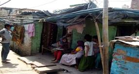
Filling up of interview schedule by research scholar in Jahangir Puri slum
Child labor is defined as the children in the age group of 5-14 years who are either self-employed or are wage workers. Here usual principal status is considered. According to NSS in India, the economic activity status of persons is captured in terms of usual status or current status approach. A person is considered to be employed in the usual status category if he or she had pursued gainful economic activity for a relatively longer time span in the immediately preceding year (365 days) prior to the date of survey. This is known as the Usual Principal Status. If a person had spent relatively shorter time span in the preceding one year prior to the NSSO survey then this is considered as Usual Subsidiary Activity Status. Primarily usual principal activity status is used in this study. Using unit level records the children are grouped into different categories viz Self Employed (working in own account enterprises), Technical/ mechanical, Performing Domestic Duties and Tea shop workers and others children who are either going to school or working or both.
Tools For Study Undertaken
Interview schedules were administered by going door to door. And there were two types of interview schedule, one for the household and second for working children of that house. In study. Discussions with the community members also helped to draw come conclusions regarding their poor living standard. Microsoft Excel was used for the analysis of data. Average scores were computed and main findings of the data are presented.
Hypothesis
Compelling circumstances and family mores and tradition cause child labor of varying character and intensity. A high prevalence of child labor is linked to poverty and to poor quality or availability of education. Children in poor families work because the family needs the extra income. It is assumed that poor households with no savings and assets and inability to borrow have no choice but to send their children out to work. As parent’s income rise they are able to send their children to school rather than to work.
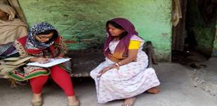
Filling up of interview schedule from a household
Jahangir Puri, which lies in north-west Delhi has a large slum cluster comprising of rag-picking families, mostly Bengali Muslims migrated from eastern part of India particularly from Bengal, Bihar and adjoining areas of Bangladesh border. Jahangir Puri has a dense population of more than 5 lakhs and it is basically a resettlement colony divided into 12 blocks. The problem of rag picking is more prevalent in Blocks such as C & CD Park, EE (E Extn), G, H, K and I blocks. Although, for research purpose, pilot survey is done only in G block of Jahangir Puri and there are approximately 200 households residing in these jhuggis and engaged in this enchanting trade of pick and sale of rags. In sample, selected through random sampling, Hindus comprise of about 30 percent and the rest are Muslims. The issues prevailing in the colony are unemployment, poverty, illiteracy, poor health and sanitation, domestic violence, child labor, female feticide, alcoholism, drug abuse etc Rag-picking as such is highly rampant in Jahangir Puri. Because of lack of hygiene the children as well as parents are prone to various diseases such as tuberculosis, scabies (skin disease) and asthma etc.
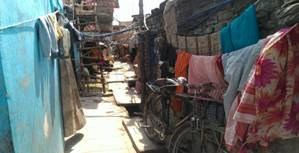
A view of street of Jahangir Puri slum
Salient Characteristics of Sampled Households
Household profile tries to encapsulate the socio economic background of the children. The household interview schedule formed an important component of this study because one can infer the socio economic condition and the aspects which actually compelled a child to work. The educational decisions are governed by the domestic circumstances whether to send a child to school or not, and whether and when to withdraw a child from school. In India, especially in the poor sections of the community, child labor cannot be taken in isolation. It has to be seen in the wider social context. Thus both home and child factors are important for determining the educational status and attainment of the child. Keeping in view the close relationship, between these two factors, the survey of the sampled households becomes a significant part of this study.
Working Children of Slum Households
Table 1 shows the incidence of child labor. It depicts that all households having one working children and 22.3 percent households have more than one working children. Here working children age is less than 14. The survey reveals the intensity of child labor in slum households of Jahangir Puri
Working children of slum households |
|||
S.No. |
Feature |
No, of households |
Percentage |
1 |
Household having one working children |
31 |
77.5 |
2 |
Household having more than one working children |
9 |
22.3 |
3 |
Total households |
40 |
100 |
Table No: 1
Migrants in Jahangir-Puri
The National Commission on urbanization has described that urbanization in India emerged in response to the push and pull factors, which resulted in a large migration from the villages to urban areas. The illiterate, semi-skilled and manual workers have been migrating in search of better employment opportunities and partly due to the demand created for skilled and semi-skilled labor in industrial and commercial undertakings.
In figure 1, it is shown that approximately 90 percent families are migrated from other states and nearly 10 percent families belong to Delhi and nearby places. It is to be noticed that migration in itself pressurize urban cities for creating more employment as most of the migrants come to get employment in big cities. And lack of employment or income leads the poor people to slums and further a vicious circle starts which create many other problems like child labor.
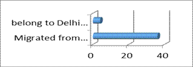
Figure 1 Migration in Jahangir Puri Slums
Types of Families
In Figure 2, the pie diagram, blue area shows the households having joint family and red area shows households having nuclear family. And it is obvious from the pie chart that households having joint family are less in numbers than households having nuclear families. It is important to notice that the size of the family with insufficient income may compel a child to work for earning his/her own living to fulfill various needs. A larger family size implies higher dependency ratio, making it difficult to afford the education of all the children and pay due attention to them.
Figure 2- Type of Family
Households Head
Table 2 further reveals that 57.5 percent households are headed by males and 42.5 percent headed by females. The field study put more light on the fact that most of males are regular in taking alcohol and most of the females who head families are widows. Background of the family may shed light in understanding that why child labor is still prevalent. As alcoholism in males interrelated with many other problems like domestic violence, physical and verbal abuse of child, and illiterate widows find hard to get employment to earn sufficient income. These circumstances may coerce a child to work.
Household headed by male and females |
|||
S.No. |
Feature |
No, of households |
Percentage |
1 |
Male |
23 |
57.5 |
2 |
Female |
17 |
42.5 |
3 |
Total households |
40 |
100 |
Table No- 2
Religious Background
Religion put measurable effect on society beliefs and their living style. Field survey reveals that there are more Muslims in G block of Jahangir Puri slum area while Hindus are relatively less and there are no Sikhs and Christians. It is clearly shown in figure 3 where x axis represents the no. of households and y axis represents different religions.
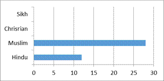
Figure 3- Religious Composition of the Household
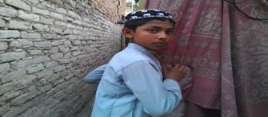
A Boy of Slum Works in a Tea Shop
Housing Condiiton
Slums are a universal phenomenon and exist in practically all the cities across the world. Delhi alone has approximately 1,100 big and small unauthorized settlements comprising six lakhs jhuggi forming various clusters of slums, with around 3.2million people living in these.
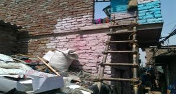
A House in Slum: Half-Jhuggi and Half-Concrete
Justice P.B. Sawant has clearly mentioned that shelter for a human being is not mere protection for his limbs and life. It is in his home where he has opportunity to grow physically, mentally, intellectually and spiritually. Right to shelter, therefore, includes right to adequate living space, safe and decent structure, clean and decent surroundings, sufficient light, pure air and water, electricity, sanitation and drainage facilities. Slum people are devoid of all these essential physical facilities and they are always living under the fear of ‘unsettlement’.
Around 65 per cent of the sampled houses have only one room and 35% two rooms only. Rooms are dingy, small and without proper ventilation. Only a few have the toilet facility at home, only around 12 % people have individual tap water supply, rest of them are dependent on the community tap and tanker water. Around 50 % spend one hour daily and around 20 % two hours daily.
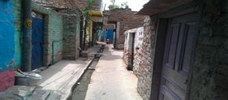
Few Pucca Houses of Slum
Poor people in slums not even able to make their pucca houses and they are conditioned to live in jhuggis. In Jahangir Puri survey 95 percent houses are having jhuggis and merely 5 percent households have pucca houses. In figure 4 x axis shows type of houses and y axis shows the number of households. Figure 5 shows the worst conditions that only negligible households have toilets (shown in blue color in pie chart) and all people defecate in open areas (shown by red color in pie chart) which in addition give birth to many diseases and poor health.
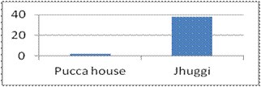
Figure 4 Types of Houses
Figure 5 Availability of Toilets
Salient Features of Child Labour of Sampled Child Labour
Work Summary of Child Labor
It is very sad that in which age they deserve to be cared loved and social-educational development, they are working for their survival. It is a shame for the society that child labor persists. The field survey in this area shows that the average age of child when he starts working is 10.19 which is really very low and a matter of concern.
Age of starting work |
||||
S.No. |
Age |
No, of child worker (Fi) |
M.P. (xi) |
fixi |
1 |
5—8 |
9 |
6.5 |
58.5 |
2 |
8—11 |
22 |
9.5 |
209 |
3 |
11—14 |
21 |
12.5 |
262.5 |
|
Sum |
52 |
28.5 |
530 |
|
|
|
|
|
Average age of started working =10.19 |
||||
Table No-3
The another matter of concern is the average length of their service is more than 2 years which shows their deprived situation and lost opportunity cost of having education.
Length of service in months |
||||
S.No. |
Months |
No, of child workers (Fi) |
M.P. (xi) |
Fixi |
1 |
10—15 |
11 |
12.5 |
137.5 |
2 |
15—20 |
4 |
17.5 |
70 |
3 |
20—25 |
8 |
22.5 |
180 |
4 |
25—30 |
9 |
27.5 |
247.5 |
5 |
30—35 |
10 |
32.5 |
325 |
6 |
35—40 |
10 |
37.5 |
375 |
|
|
52 |
|
1335 |
Average length of service= 25.6 |
|
|
||
Table No- 4
The worst fact came in light in the study was their working hours .The average working hours of child workers are 9.5 hours. Some children are working more than 12 hours which shows their vulnerable position.
Working hours of children |
||||
S.No. |
Stipulated Hours |
No, of children (Fi) |
M.P. (xi) |
Fixi |
1 |
2—4 |
4 |
3 |
12 |
2 |
4—6 |
4 |
5 |
20 |
3 |
6—8 |
8 |
7 |
56 |
4 |
8—10 |
11 |
9 |
99 |
5 |
10—12 |
10 |
11 |
110 |
6 |
12—14 |
15 |
13 |
195 |
|
|
52 |
|
492 |
Average length of service =9.5 |
|
|
||
Table No-5
(Formula used for drawing average in Table 3, 4 and 5 is
Average= Sum of fixi/ N)
M.P.-Mid point denoted by xi
Fixi- Multiplication of fi (no. of children) and xi (M.P.)
N- Total No. of child workers
More than 70 percent of child labor of the area is engaged in hotel or catering work while rest others are engaged in households, tea shops etc. Figure 6 shows no. of child labor on y axis and different occupation on x axis.
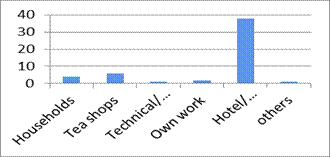
Figure 6 Nature of Work
Child Labor Deprived of Education
Table 6 illustrates that 67.3 child workers left school for work and only 32.6 percent retaining school with work. The poor condition of family income left many child in the dearth of education.
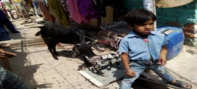
A Kid who is not going to School but Working as Tiffin Supplier
Percentage of school going children+ |
|||
S.No. |
Feature |
No, of Children |
Percentage |
1 |
School going children with work |
17 |
32.6 |
2 |
only working |
35 |
67.3 |
3 |
Total |
52 |
100 |
Table No 6
Prevailing Bad Habits in Child Labor
Poor child labor who lost their childhood is also victimized by social evils and having bad habits like consuming gutkha (Tobacco), smoking and drinking. In figure 6 blue part of pie chart indicates child workers having bad habits which are approximately 48 percent. Bad habits advance the adverse effects on health.
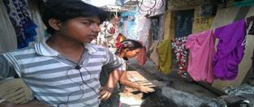
A boy of Slum: Victim of some bad habits like consuming tobacco
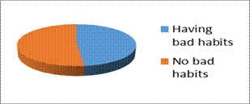
Figure 7 Pie diagram for children having bad habits
Children having idea of leaving work
Figure 8 and Table 7 depicts that majority of child labor of Jahangir Puri slum have no idea of leaving job. It shows their lost hope and interest in education. Approximately 40 percent of children still hope that they will leave the job if their family conditions improve. No matter how much hardship life brings, there is still a faith, which gives them strength to keep walking on hard path
Pecentage of chidren having idea of leaving job |
|||
S.No. |
Idea |
No, of Children |
Percentage |
1 |
Till opening school |
7 |
13.4 |
2 |
Till improving Family conditions |
21 |
40.4 |
3 |
No idea |
24 |
46.2 |
|
Total |
52 |
100 |
Table No-7
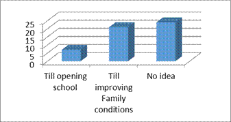Figure No- 8 : Idea of Leaving job
Poor child Poor Savings of Poor Child Workers
The poor is so poor to save as they even lack the subsistence and child labor is the result of poverty and insufficient income. Figure 9 throws light on this fact as blue portion of the chart illustrates no saving, means majority of child labor are unable to save a part of their income for themselves.
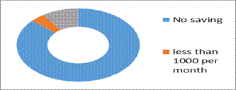
Figure 9 Saving of child worker
Wage Cut during Illness
The most susceptible thing is wage cut during leave because of illness or other reasons. In table 8 it is shown that more than 50 percent of child labors are having wage cut for leave due to illness.
Percentage of children having wage cut |
|||
S.No. |
Feature |
No, of Children |
Percentage |
1 |
Wage cut during illness |
30 |
57.7 |
2 |
No wage cut |
22 |
42.3 |
|
Total |
52 |
100 |
Table No-8
Conclusion
With regard to child labor in India, Justice Subba Rao, the former Chief Justice of India, rightly remarked; “Social justice must begin with the child. Unless a tender plant is properly nourished, it has little chance of growing into strong and useful tree. So, first priority in the scale of justice should be given to the welfare of children. Supreme Court has played an important Role to control the problem of child labor and has shown its concern for child labor by bringing occupations or processes under the courts order regard to the prevailing socio-economic conditions, it is not possible to prohibit child labor altogether and in fact, any such move may not be socially or economically acceptable to large masses of people. That is why Article 24 limits the prohibition against employment of child labor only to factories, mines or other hazardous employments. The Central Government was directed to persuade the workmen to send their children to a nearby school and arrange not only for the school fees to be paid but also provide free of charge, books and other facilities such as transportation etc
In spite of various stringent labor laws the problem of child labor put forward a serious challenge to the development process in the underdeveloped economies. Asia is leading in this respect with 60 percent of child labor of the world followed by sub-Saharan Africa (23 percent). West Asia and Latin America together constitute eight percent and North Africa accounts for 6 percent of child labor of the world. Work participation rate among children is 19 percent in Asia, 16 percent in Latin America and 15 percent in North Africa. In sharp contrast to this, work participation rate of children in the developed countries is only 2 percent
Based on the survey data, following observations are noticeably revealed.
1. All houses of this particular block of Jahangir Puri slum having working children in their families. And most of the families belong to BPL (Below Poverty Line) category.
2. Most of the families are nuclear and belong to muslim community.
3. Importantly, nearly 95 percent houses are jhuggis and don’t have toilet facilities and don’t have hygienic lifestyle. Which make it obvious that diseases are more prominent.
4. The percentage of child labor in work demand more than 8 hours is highest. Average stipulated hours of working came to be 9.5 hours. This clearly indicates the need for specific interventions in slums that have not been brought under the notification process yet.
5. Most of the working children started working in tender age of 10 or earlier. And more than 67 percent left schools due to poor family income. It is clear that issue of livelihoods security is a real need of the hour in slum area of North Delhi.
6. Over 48% of the parents said that they did not send their children to school as they could not afford their education. This came out as a more important reason than the lack of interest in schooling. Also, around 14% clearly said that the child was required to work to supplement the family income and hence, could not be sent to school. This clearly brings out that poverty is an important reason responsible for child labor
7. Negligible percentage of working children (5-14 years) said that they had received any kind of training for developing their skills.
8. Nearly 50 percent of children are getting victimized of bad social environment and prone to be indulging themselves in bad habits.
9. Child labor supplementing their families by their income so unable to save for themselves due to inadequate wages.
10. Very few have idea of leaving job till their family conditions improve, while most of them have no idea to be out of this vicious circle of low income.
11. Medical assistance is very poor at work and mostly wages are cut during leave because of illness.
By seeing conclusions we can infer that the hypothesis made for the study stands true as a high prevalence of child labor is linked to poverty and to poor quality or availability of education. Children in poor families work because the family needs the extra income. It is assumed that poor households with no savings and assets and inability to borrow have no choice but to send their children out to work. As parent’s income rise they are able to send their children to school rather than to work. The more revelations tell that, mostly child workers are stuck in the vicious circle of work and having no clue to be free from the menace.
Future a matter of concern
Expressed in a generalized sense, the above factors constitute building blocks of a vicious circle of continuing educational underdevelopment and are sustained by each other. To achieve a virtuous circle of development, a straight jacket approach of achieving demand and supply equilibrium has neither worked in the past, nor would work in the future. As the regions/social groups progress towards universal participation, the strategies to meet the basic learning needs of the marginalized groups of population require an approach which is future-oriented rather than extension of the established practices meant for some other groups of population.
City planners never anticipated the large influx of the migratory population and their civic needs. They could not provide adequate facilities at affordable costs, which has led to the emergence of slums/ghettos, where people prefer to live without basic amenities for various compulsions.
"Poverty is not only a problem of low incomes; rather, it is multi-dimensional problem that includes low access to opportunities for developing human capital and to education". Slum children too face educational deprivation in terms of accessibility and quality as well.
References
[1] Atri, N. Incidence Of Child Labour: A Case Study Of Nanda Devi Fair in Nainital, International Journal of Trends in Economics (IJTEMT), Vol V, Issue III, 30 June 2016..
[2] Aggarwal, Yash, Trends in Access and Retention - A Study of Primary Schools in DPEP Districts, Educational Consultants India Ltd, 1999
[3] Aggarwal, Y.P, Primary Education in Delhi! How Much Do the Children Learn? National Institute of Educational Planning and Administration New Delhi, 2000
[4] Aggarwal Yash & Jha, M. Mritinjay, Primary Education in Rural Haryana, National Institute of Educational Planning and Administration New Delhi, 2001
[5] Ali Sabir, Environment and Resettlement Colonies of Delhi, Har Anand Publiations, New Delhi, 1995.
[6] Ashraf, M.S., and Papola, T.S., Problems of Non-Enrolment, Non-Attendance and Dropouts in Schools : Study in Uttar Pradesh, Giri Institute of Development Studies, Lucknow.1986
[7] Atal Yogesh (ed.), Perspectives on Educating the Poor, New Delhi, Abhinav Publications, Delhi, 1997.
[8] Banerji, Rukmani, Why Don’t Children Complete Primary School? A Case Study of a Low Income Neighbour hood in Delhi, Economic and Political Weekly, August 9, 1997, PP 2053-2063.
[9] Joshi, G, Child Rights in India: A Light on the Role of NHRC in Implementing them, International Journal of Trends in Economics (IJTEMT), ISSN: 2321-5518, Vol IV, Issue VI, December 2016.
[10] Banerji, Rukmani, Poverty and Primary Schooling, Field Studies from Mumbai and Delhi, Economic and Political Weekly, March 4, 2000, pp 795-802
[11] Bhatty, Kiran , Educational Deprivation in India - A Survey of Field Investigations, Economic and Political Weekly, July 4, 1998 & July 11, 1998.
[12] Bose, Ashish, Urbanisation and Slums (Ed) Prodip to, Roy and Shangon, DasGupta : Urbanisation and Slums, Har Anand Publiations, New Delhi, 1995
[13] Chugh Sunita Educational Status of Children in Urban Slums With Reference to Available Educational Facilities : A case Study of Sanjay Colony of Okhla PhaseII, Ph.d Thesis, New Delhi, 2002
[14] Census of India, 1971, 1981, 1991, 2001 Final Population Totals, Serioes-1, Paper 1 of 1992, Vol. 1 and 2 and II NICNET Census Series, 1993.
[15] Bisht, A, Joshi, A and Pant, H., Role of NGO’s for Eradication of Rural Pocverty Through Women Empowerment: Case Study Refernce of MATREE Tonk District of Rajasthan, International Journal of Trends in Economics (IJTEMT), ISSN: 2321-5518, Vol II, Issue I, February 2013.
[16] Chakarabarty, Vandana, Education of the Urban Disadvantaged, MHRD &NIEPA, New Delhi, 2000.NIEPA Occasional Paper58
[17] Govinda, Rangachar, Status of Primary Education of the Urban Poor in India -An Analytical Review No. 105, Research Report, UNESCO, 1995
[18] Govinda, R and Varghese, N.V : Quality of Primary Schooling in India : A Case Study of Madhya Pradesh, IIEP, Paris, 1993.
[19] Jangira, N.K.&Yadav,D.D Learning Achievement of Primary School Children in Reading and Mathematics, NCERT,1994
[20] JhaJyotsana & Jhingran Dhir Elementary Education for the Poorest and other Deprived Groups: The Real Challenge of Universalisation, Center for Policy Research, new Delhi, 2002.
[21] Juneja, Nalini, Primary Education for All in the City of Mumbai, India: The Challenge Set by Local Actors, NIEPA, New Delhi, 2000.
[22] Hazarika, K, Tea Tribes are lagging behind in the Pocess of Urbanmization: A Study of Selected Tea Gardens of Johar District, Assam, International Journal of Trends in Economics (IJTEMT), ISSN: 2321-5518, Vol I, Issue VI, December 2012.
[23] Kingdon, Geeta, G, How Much do School Matter to Pupil Achievement in India, Journal of Educational Planning and Administration, Vol 12(1),NIEPA, New Delhi, 1998.
[24] Kuthari, O.P et al, A study of Access, Retention and Achievement in Malhotra,D.D, Synthesis of the UBSP Benchmark Survey, Vol I, National Institute of Urban Affairs, New Delhi, 1997
[25] Mukhopadhyaya S and Suri I.S. Efforts of the Government for Primary Education of the Poor in the Mega City of Delhi. Paper presented at a Seminaron Indian Mega Cities and Primary Education of the Poor, NIEPA, New Delhi, September 2-4, 1998.
[26] Nayar, Usha et.al, Factors for the Continuance and Discontinuance of Girls in Elementary Education, Project Report, NCERT, 1997
[27] Panchmukhi, P.R., Private Expenditure on Education in India : An Empirical Study, India Institute of Education, Pune, 1990.
[28] Prakash ,Shri, Use of Sample Survey Techniques to Study Problems of Education of Children of Delhi and Bombay Slums, Research Project Report, NUEPA, 1997
[29] Prakash Ved, Gautam, S.K.S & Bansal, I.K Scholastic Attainment under MAS: An Appraisal, NCERT, 2000
[30] Public Report on Basic Education in India. The PROBE Team, Oxford University Press, New Delhi, 1999.
[31] Satvir Singh, Determinants of Learner Achievement at Primary Stage, Indian Educational Review, 31(1), pp 47-68, January 1996.
[32] Y.P. Aggarwal & Sunita Chugh 59 School Effectiveness and Learning Achievement at Primary Stage – International Perspective, National Council of Education Research and Training, New Delhi.1995.
[33] Seetharamu, A.S., Indian Mega Cities and Primary Education of the Poor: The Case of Bangalore City, Paper presented at NUEPA at the Workshop on "Indian Mega Cities and Primary Education of the Poor", September, 1998.
[34] Tilak, J.B G., How Free is “Free” Primary Education in India? Economic and Political weekly, PP 275-282 February 3, 1996. Pp 355-366, February 10, 1996.
[35] Varghese, N.V., School Quality And Student Learning: A Study of Primary Schooling in Kerala, National Institute of Educational Planning and Administration, New Delhi, 1994.
[36] Ali, F, Educational Gender Discrimination and its Economic Development Impact, International Journal of Trends in Economics (IJTEMT), ISSN: 2321-5518, Vol V, Issue IV, August 2016.
All photographs were taken by research scholar during Survey of the slum with the permission of slum dwellers.